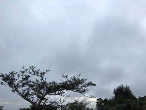
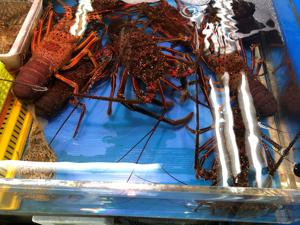
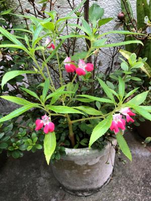

うるがいの話 ある日
最新: ストア指定の配送【うるがいの話 ある日】とは 一日だけのプログです
『うるがいの話』の最新一日だけのプログで、通信料が少なく経済的だ。カニの画像をクリックすると全ての日付が載る『うるがいの話』サイトを表示します
|
|
【うるがいの話】 うるがい(ｳﾙｶﾞｲ urugai)とは、『もずくがに』の名前でとても大きくなります。 |
|---|---|
|
|
【カミマヤーの話】 猫のことを方言でマヤーといいます。カミマヤー（kamimayaa）とは、神の猫のことです。 |
|
【たながぁの音楽】 たながぁ（ﾀﾅｶﾞｰ tanagaa）とは手長えびのことで、何種類かあり大きいのは車 エビぐらいになります。 |

|
【ぶながぁの話】 ぶながぁ(ﾌﾞﾅｶﾞｰ bunagaa)とは、赤い髪の毛、赤い身体、そして身長は１ｍ２０ｃｍ ぐらい、川の蟹を食べているの目撃された。場所は沖縄県国頭郡大宜味村のと ある村僕の隣近所に住んでいる爺さんから、聞いた話です。 |
|
|
【ギーマの話】 ギーマ(giima)とは、山原の里山に咲くスズランに似た、 花を付けます。実は食べられます、 気が付くと口の周りが紫になっています。 |
2022年06月06日 (月）ストア指定の配送
16:31
  
永年正規保証 Microsoft Office 2019 home and business プロダクトキー
オフィス2019 認証保証 Word Excel PowerPoint 手順書付き ストア 送料無料
未使用 ・・・・・即決498円
なるものをオークションで落札する。ところが、手続きをしていくと『ストア
指定の配送』なるものの意味が、良く分からなかった。マイクロソフトのネッ
トのストア（Ｓｔｏｒｅ）からアプリをダウンロードすることだった。なるほ
どそれだと、ＤＶＤなどの送料は必要ないのだから無料か。ちなみに最新版の
２０２１だとアマゾンで購入費用は３万４，４５２円である。５年前にディス
クトップ２号を購入するとき、ヨメがExcelが必要というのでoffice365なるも
の購入した。ただ、一年後に金額を払わないといけなくなったので支払いを止
めた経験がある。結局ヨメは一度も利用しなかったが、さてどう使うか・・・
１６時２６分 ビットコインの総資産 ￥１１、８２８↑